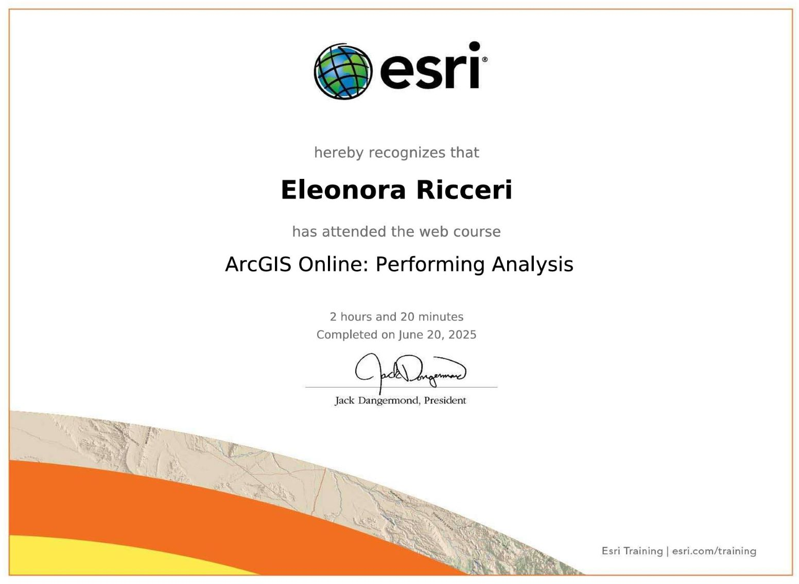
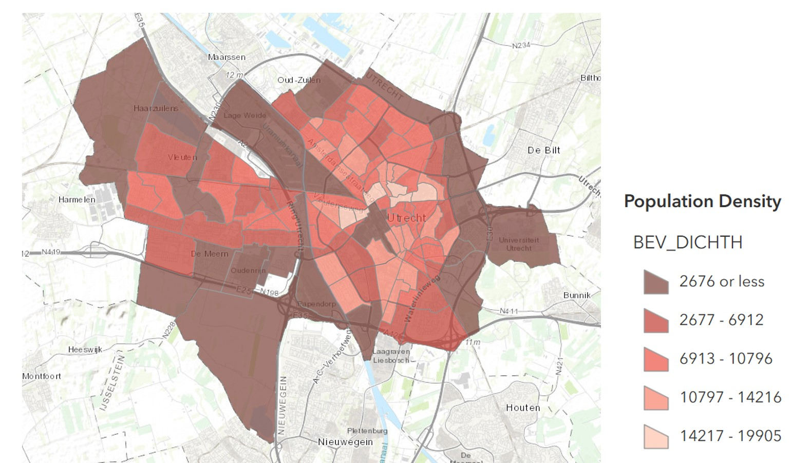
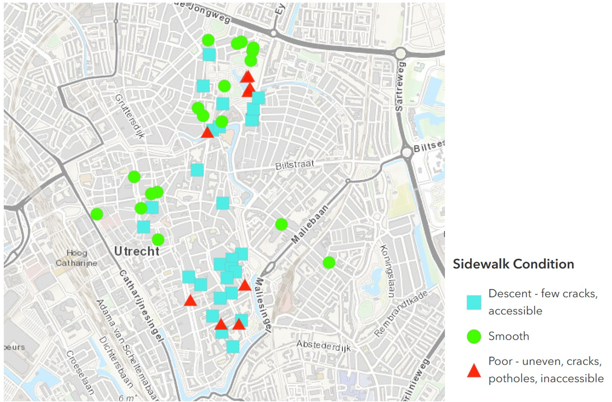
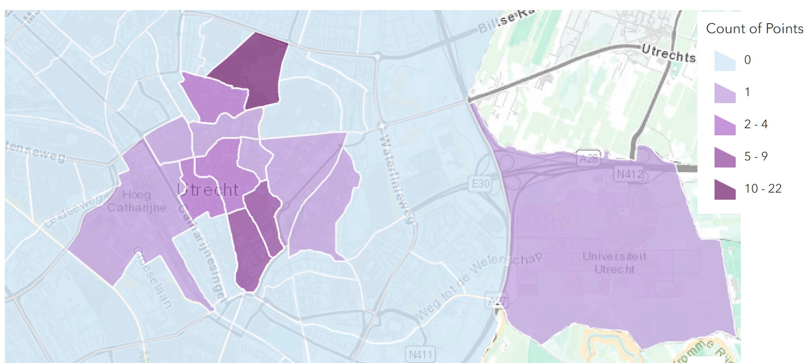
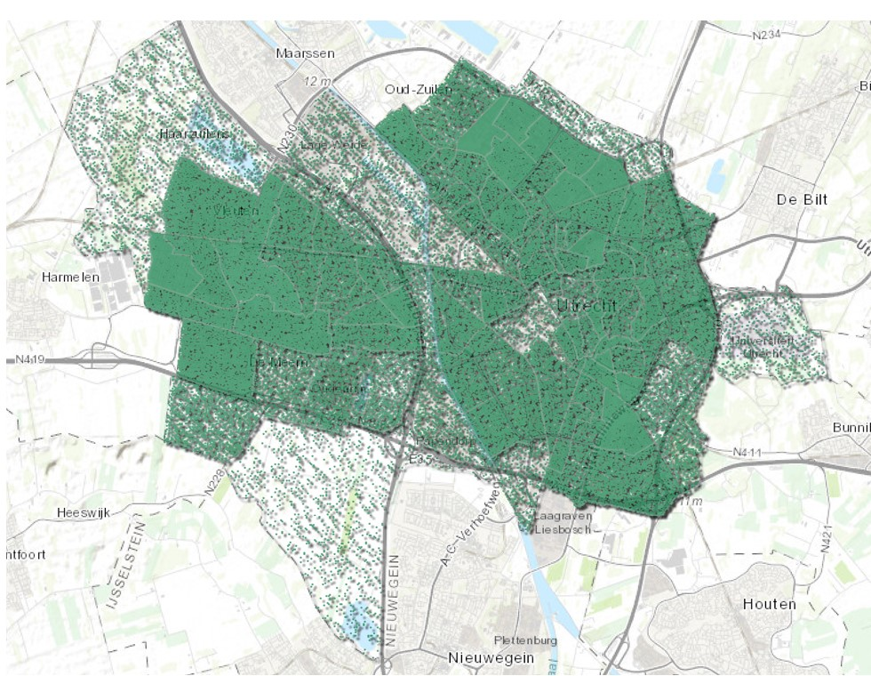

Vector Map
During the course of this lab, I had the opportunity to attend and complete the Web Course: Performing Analysis
Data Collection Project

Vector Map representing the population density in Utrecht (2024)
Vector Map representing the sidewalk conditions in Utrecht. The Data was collected by students on Thursday 19/06/2025
In this vector map, I used the Summarize Within tool from the Analysis toolbox to examine the relationship between the two layers: Sidewalk conditions (points) and Population density (polygons) in Utrecht. My aim was to determine whether sidewalk quality correlates with population density, hypothesizing that higher-density areas would exhibit better sidewalk conditions due to more frequent maintenance and usage. However, I was unable to obtain the expected results. The analysis only measured the total number of sidewalk condition points within each population density polygon, rather than distinguishing between the different categories of sidewalk condition (poor, decent, and smooth). As a result, the map did not reflect the distribution of sidewalk quality across different population density zones as intended.
Vector Map representing the number of trees in every population zone
To create the second vector map, I used the Analysis tools in ArcGIS and selected the Summarize Within tool to analyze the relationship between the Tree density (point layer) and Population density (polygon layer). I chose this tool to calculate how many trees are present in each population zone. My aim was to visualize whether tree density changes depending on population density, with the expectation that highly populated areas would have fewer trees due to the prevalence of urban features such as buildings and roads. For both vector maps, I chose to use the Summarize Within tool because it enables the counting and summarizing of attributes within polygon boundaries. This tool is useful for detailed, category-based spatial summaries, allowing me to analyze how sidewalk conditions or tree density vary across different population density zones.